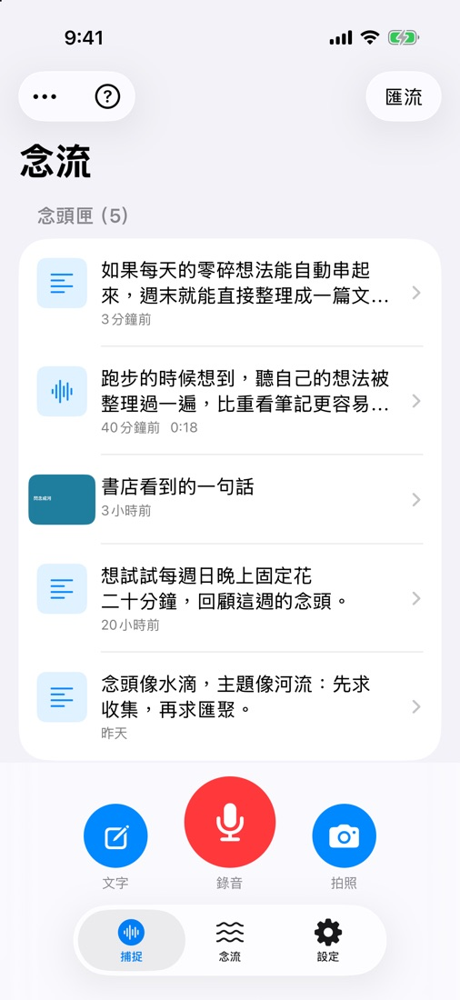
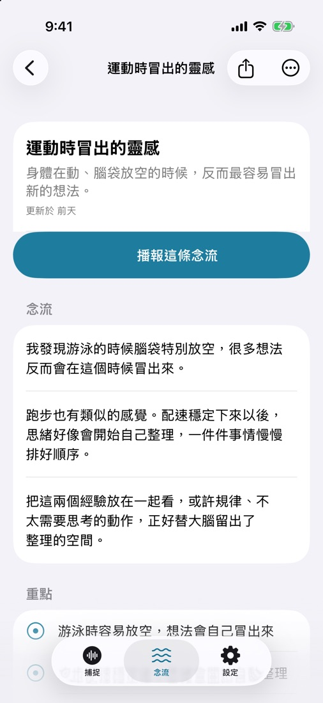
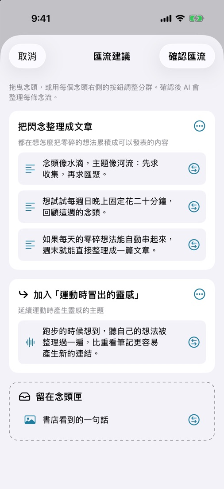
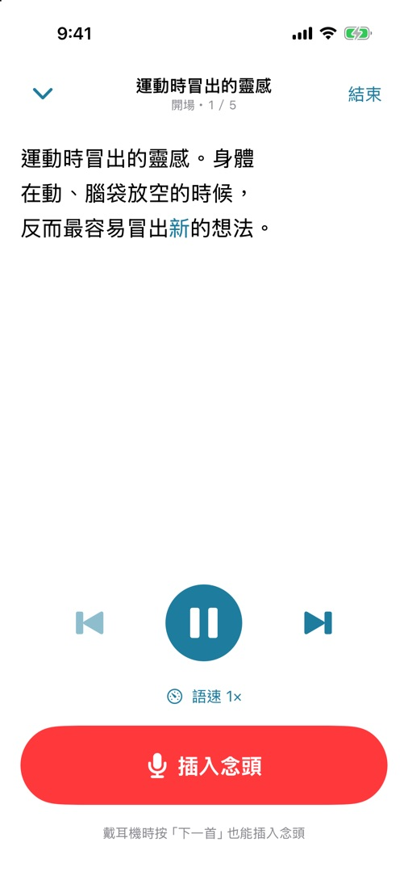
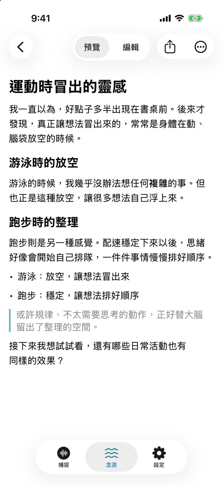
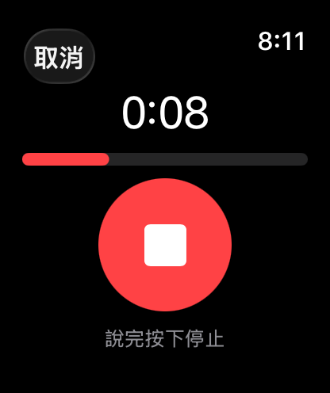
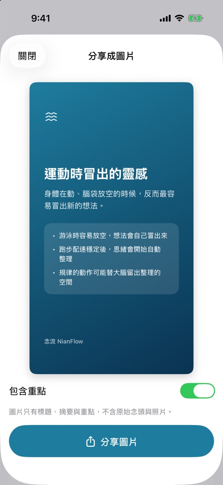

iOS 內測招募中・限額 20 位iOS beta open · 20 spots
Catch every
passing thought.
跑步、通勤、洗澡時冒出的好點子，抬手對 Apple Watch 說、鎖定畫面一按就錄。念流把零散的念頭匯成主題、唸給你聽，再幫你寫成一篇文章。 Ideas show up while you run, commute or shower. Speak to your Apple Watch or tap the Lock Screen to record. NianFlow gathers scattered thoughts into themes, reads them back to you, and turns them into an article.
免費・需要 iPhone（iOS 26）・AI 功能自備 OpenAI 或 DeepSeek API KeyFree · iPhone with iOS 26 · Bring your own OpenAI or DeepSeek API key for AI features


從閃念到文章，四步。From a passing thought to an article, in four steps.
你只要負責說出來，整理、回顧、成文交給念流。You just say it. NianFlow does the sorting, the reviewing and the writing.
-
隨口說、隨手拍Say it, snap it
錄音、拍照或打字。語音在手機上轉成文字，AI 順手修錯字、補標點。Record, photograph or type. Speech is transcribed on the phone, then AI fixes typos and punctuation.
-
AI 匯成主題AI groups by theme
一段時間的念頭依主題歸成「念流」，忠於原意、不亂加內容。Thoughts are grouped into “flows” by theme, faithful to what you meant, nothing made up.

-
邊聽邊補充Listen and add
念流用口語唸給你聽。想到什麼，點耳機「下一首」直接插話。Each flow is read aloud. Thought of something? Press “next” on your earbuds and just talk.

-
一鍵寫成文章One tap to an article
部落格、筆記、社群貼文或自訂風格，輸出 Markdown 直接分享。Blog post, note, social post or your own style, exported as Markdown.

不用打開 App，
也能記下來。Capture without
opening the app.
好點子不等人。念流把錄音按鈕放在你手邊每個地方。Good ideas don't wait. NianFlow puts the record button everywhere you are.
- Apple Watch — 抬手就錄，錄完自動傳到 iPhone 轉成文字。raise your wrist and talk; it syncs to your iPhone and gets transcribed.
- 鎖定畫面小工具Lock Screen widget — 不用解鎖，一按就開始錄。one tap to record, no unlocking.
- Siri 與動作按鈕Siri & Action button — 說「用念流記下念頭」（動作按鈕限 iPhone 15 Pro 以後機型）。just ask Siri (Action button on iPhone 15 Pro and later).
- 停頓自動結束Auto stop — 說完停幾秒就自動收工，不用再按一次。pause for a few seconds and recording ends on its own.

用聽的，
回顧你的想法。Review your ideas
by listening.
念流把每條主題寫成適合朗讀的口語短句。通勤、散步時戴上耳機，像聽 Podcast 一樣聽自己的念頭。Every flow is written in short spoken sentences. Put on your earbuds on a walk and listen to your own thoughts like a podcast.
- 聽到一半有新想法？點耳機「下一首」直接插入念頭，錄完從句首續播。New idea halfway through? Press “next” on your earbuds to insert a thought; playback resumes from the sentence.
- 待聽清單連續播放，記得哪些已經聽過。A listening queue plays flows back to back and remembers what you've heard.
- 鎖定畫面與 AirPods 都能控制播放。Control playback from the Lock Screen and AirPods.
身體在動、腦袋放空的時候，
反而最容易冒出點耳機「下一首」，直接插話新的想法。
When my body moves and my mind drifts,
that's when press “next” and just talknew ideas show up.
一週的碎念，
變成一篇文章。A week of fragments,
one finished article.
選一種風格，AI 用第一人稱「我」把念流寫成 Markdown 文章，可以預覽、編輯、分享或複製。Pick a style and AI writes the flow up in your own first-person voice as Markdown you can preview, edit, share or copy.
- 設定你的個人寫作風格，文章更像你寫的。Describe your personal writing style so articles sound like you.
- 沒有 API Key 也行：把念流帶到你慣用的 AI 助理討論，再貼回念流存成文章。No API key? Take the flow to your favorite AI assistant, then paste the result back as an article.
- 念流也能做成分享卡片，貼到社群。Turn a flow into a share card for social media.

你的念頭，留在你身邊。Your thoughts stay with you.
沒有念流帳號、沒有廣告、沒有分析追蹤。No NianFlow account, no ads, no analytics.
-
錄音不上傳Recordings never leave
語音只在手機上用 Apple 的語音辨識轉成文字，錄音檔不會送到任何伺服器。Speech is transcribed on the phone with Apple's speech recognition. Audio files are never sent to any server.
-
存在你的 iCloudStored in your iCloud
念頭、念流與文章存在手機，透過你自己的 iCloud 在裝置間同步。Thoughts, flows and articles live on your phone and sync through your own iCloud.
-
你的 Key，你決定Your key, your call
AI 功能用你自己的 OpenAI 或 DeepSeek Key，同意後才會把念頭文字（和照片）送出。用量在設定裡看得到。AI uses your own OpenAI or DeepSeek key. Thought text (and photos) are sent only after you agree. Usage is shown in Settings.
加入內測。Join the beta.
念流目前在 TestFlight 內測，限額 20 位。三步就能開始。NianFlow is in a TestFlight beta limited to 20 testers. Three steps to start.
Android 版準備上架 Google Play。有問題請看An Android version is on its way to Google Play. Questions? See 支援頁Support。.
-
安裝 TestFlightInstall TestFlight
在 iPhone 的 App Store 下載 Apple 的 Get Apple's TestFlight App。 app from the App Store on your iPhone.
-
打開邀請連結Open the invite link
在 iPhone 上點On your iPhone, tap the 念流內測連結NianFlow beta link，接受邀請後安裝。需要 iOS 26。, accept and install. Requires iOS 26.
-
設定 AI（選用）Set up AI (optional)
到「設定 › AI 服務」貼上 OpenAI 或 DeepSeek 的 API Key。錄音、轉文字、播報不需要 Key。Paste an OpenAI or DeepSeek API key in Settings › AI. Recording, transcription and playback work without one.